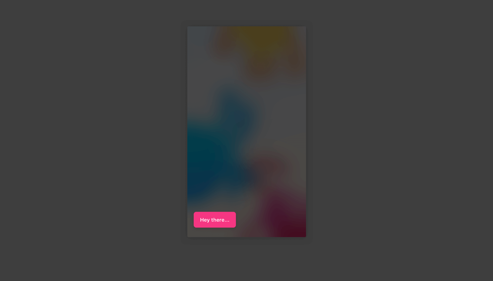
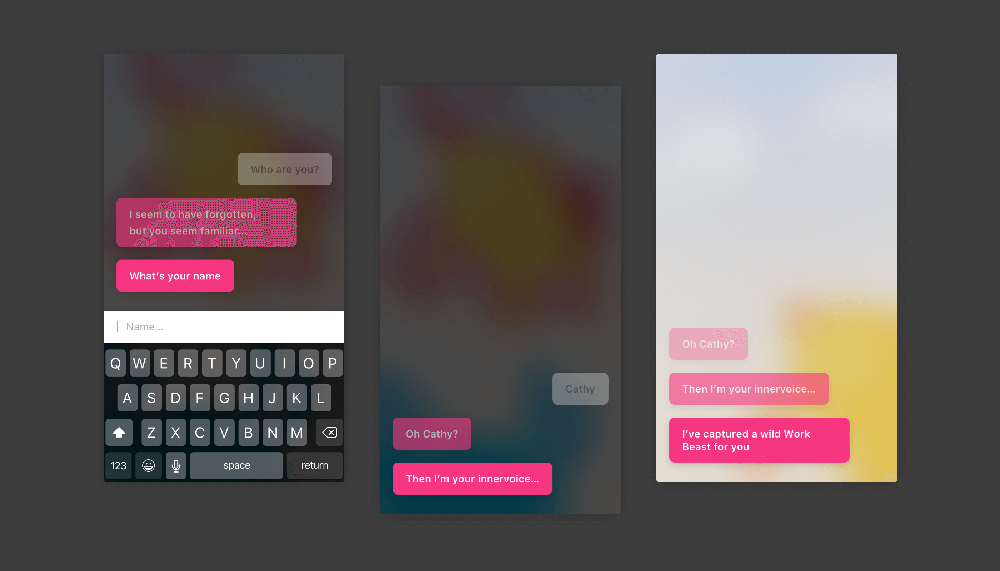
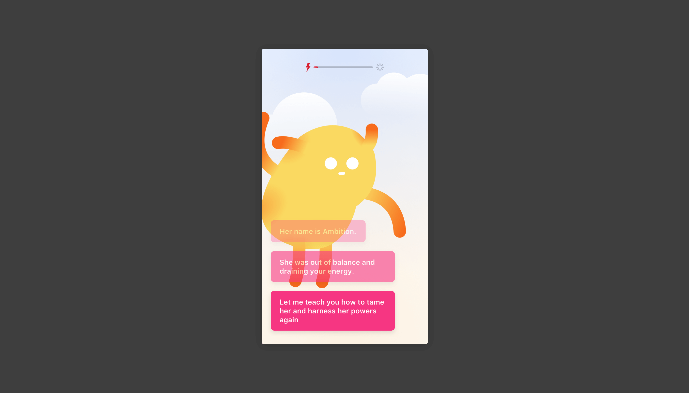
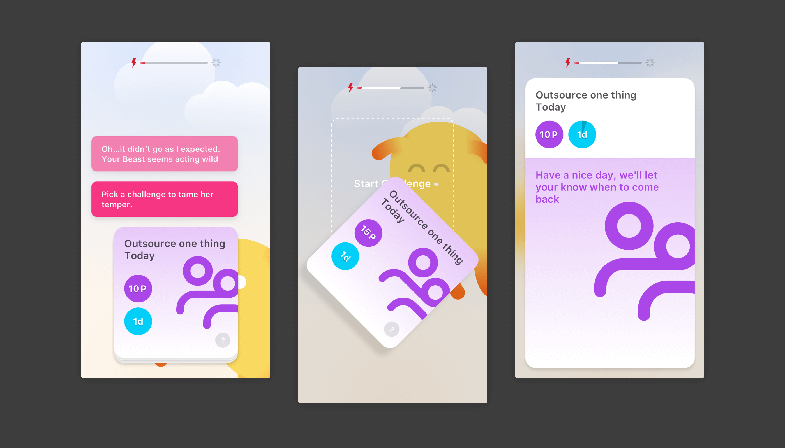
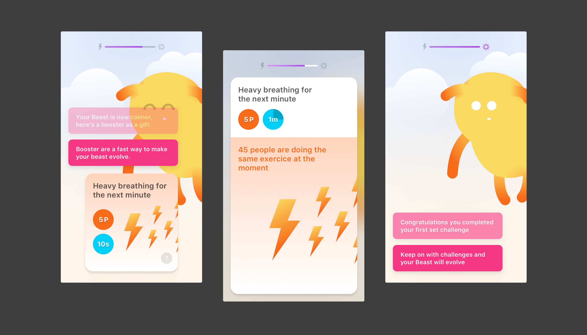
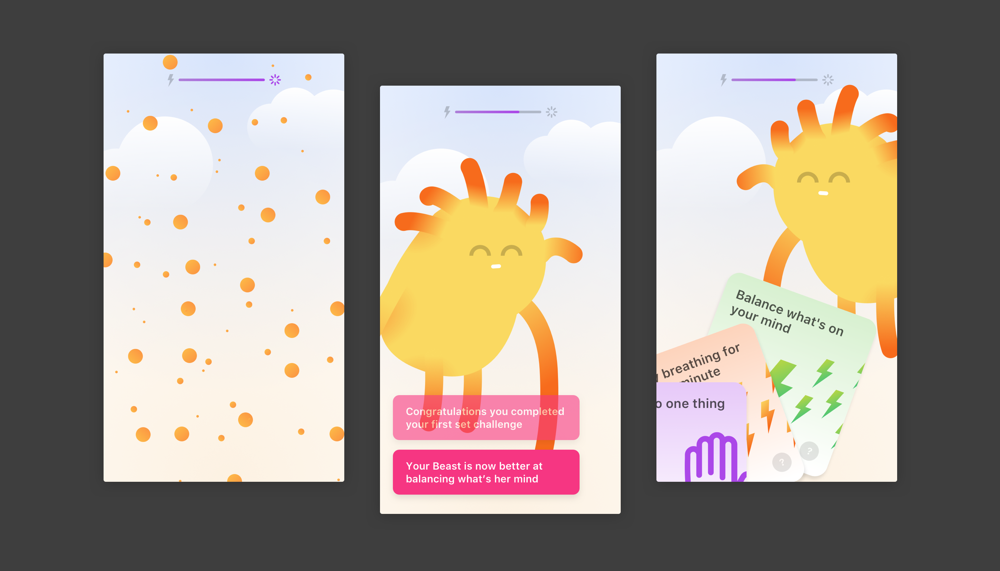
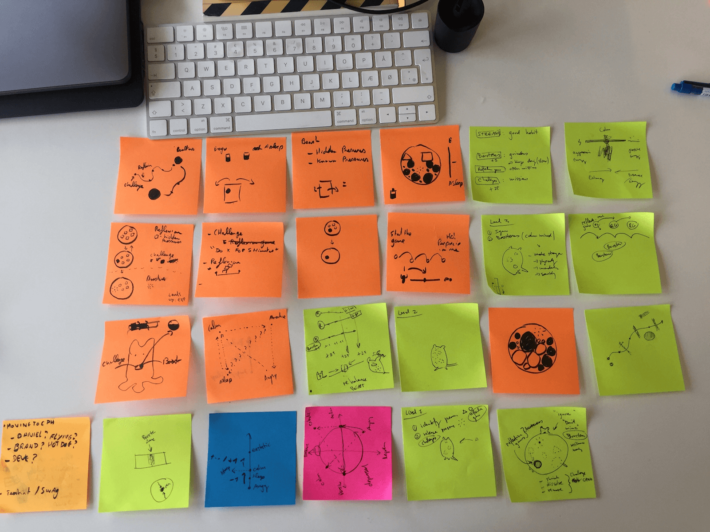
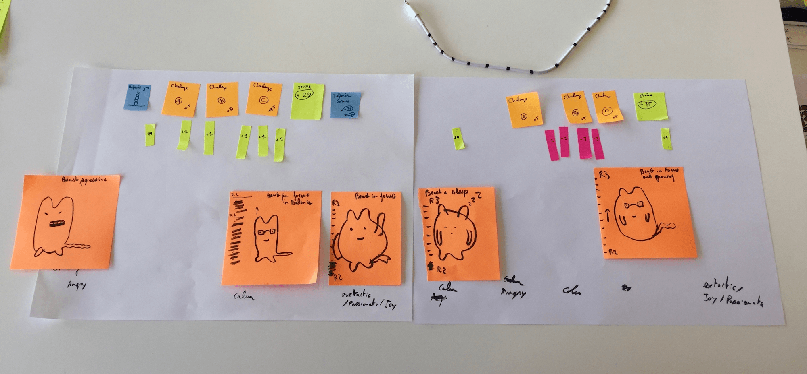

While exploring solutions and problems linked to mental health, I worked with Toke Barter on a consumer-oriented approach to reducing anxiety.
Beast of Burden is an app that helps you to identify hidden pressures, or any sources of stress/anxiety, and leads you to develop habits to fix them.
You are paired with a Beast, your companion or alter-ego that relies on you to evolve. By engaging mini-challenges that explore internal and external pressures affecting your beast, you identify your own pressures.


Meet your inner voice. It will guide you through the app and your experience.

Your inner voice introduces you to your Beast and explains how to take care of it.

After meeting your Beast, you’re invited to identify your first pressure and try to balance it via a simple game.

You’re unbalanced and that results in draining your Beast’s energy. Depending on which pressure you’ve identified, you’re assigned a set of actionable insight cards that will improve your Beast’s mood.

Each played card is followed up with feedback around how the actionable insight impacted your Beast’s mood. You are then asked to express how it worked for you.

Each set of cards is composed of actionable insights but also what we called “Boosters”. Boosters are insights that require little time but also improve your Beast’s mood.

Once your Beast’s mood is improved enough and it’s in a calm state, she evolves into a bigger and improved Beast, ready to tackle new challenges with your help.
Behind the screen
Beast of Burden was one of my favorite projects of 2017. Here’s a sneak peak at one day of work exploring different concepts and mapping out the prototype journey.

Exploring different concepts around draining and feeding our Beasts’ energy.



Beast of Burden was one of our explorations into the field of mental health. Toke is now running the project outside of Founders studio. Our exploration of this field also led us to start Headlight, another project I worked on while at Founders.
Find out more about the work Toke is doing on Beast of Burden at beastsofburden.co